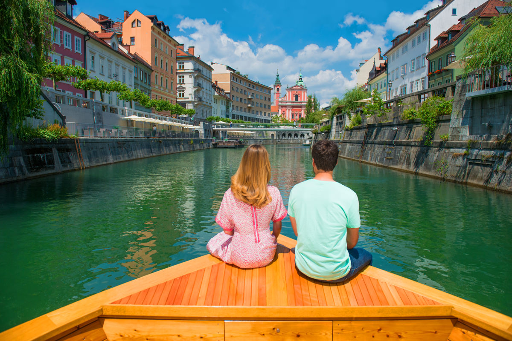
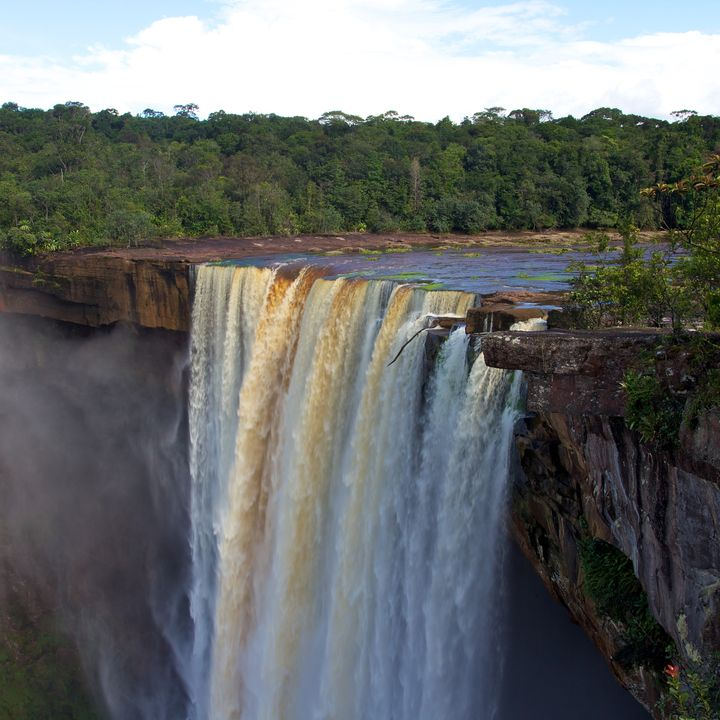
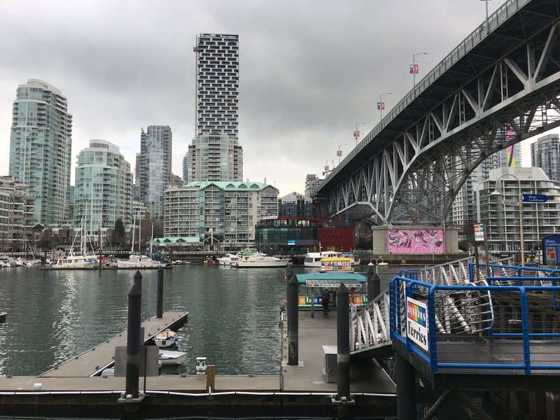
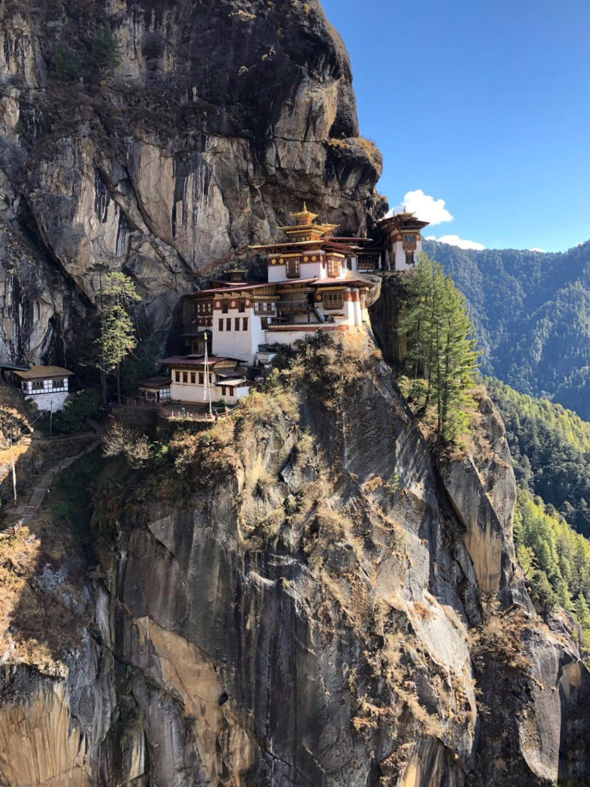
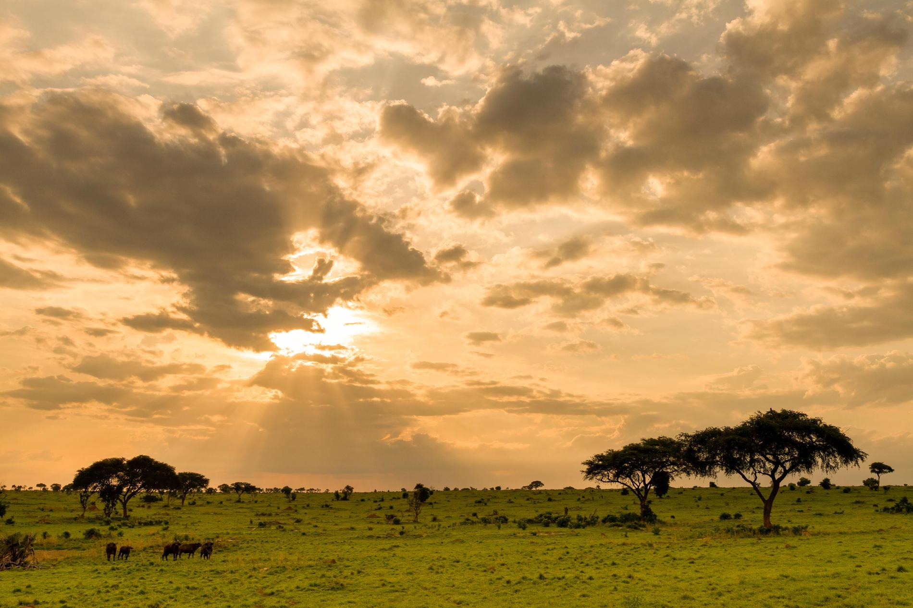

Reis inspiratie
Wintersport vakantie
Bestemmingen voor wintersport
- 
Ljubljana
Ljubljana is de hoofdstad van Slovenië. Het stedelijke gebied heeft ca. 280.000 inwoners (2010) en is gelegen aan de rivier de Ljubljanica. De oude stad kent gebouwen en bouwwerken met een lange geschiedenis. Gebouwen dateren uit het tijdperk van de renaissance en het classicisme, maar ook gebouwen uit de 20e en 21e eeuw zijn nadrukkelijk aanwezig. De bekendste bouwwerken zijn de drie bruggen en het kasteel "Ljubljanski Grad". In de stadsdelen om het stadscentrum heen staan veelal gebouwen uit de communistische tijd. Veel gebouwen in de stad zijn ontworpen door de Sloveense architect Jože Plečnik die nadrukkelijk zijn stempel op de stad heeft gedrukt. Gebouwen als de universiteitsbibliotheek, verschillende kerken, en het stadion van Ljubljana zijn door hem ontworpen, evenals de markt, de drie bruggen en een begraafplaats.
lees meer
- 
Guyana
Het huidige land Guyana is in feite onderdeel van een groter gebied dat ook Guyana (of Guiana) werd genoemd - naar het Indiaans voor "land van vele wateren", en zich uitstrekte tot in Venezuela en Brazilië. Het huidige Guyana bestond in de 17e eeuw en 18e eeuw uit de vier Nederlandse koloniën Pomeroon, Essequibo, Demerara en Berbice. In 1763 kwamen de slaven van de kolonie Berbice onder leiding van de slaaf Cuffy in opstand in de slavenopstand van Berbice. Cuffy is een nationale held van Guyana. Na de napoleontische oorlogen werden de Nederlandse koloniën bij het Congres van Wenen in 1815 officieel overgedragen aan het Verenigd Koninkrijk, met de Corantijn als nieuwe grensrivier met Suriname dat een Nederlandse kolonie bleef. De voormalige Nederlandse koloniën werden in 1831 samengevoegd tot Brits Guiana bestuurd uit Georgetown. Op 1 augustus 1834 werd de slavernij afgeschaft, negentwintig jaar voor Suriname.
lees meer

Lord Howe Island
Lord Howe-eiland (Engels: Lord Howe Island) is een eiland in Australië dat tot de deelstaat Nieuw-Zuid-Wales behoort. Het is vernoemd naar de Britse admiraal Richard Howe. Lord Howe-eiland is 14,6 km² groot en het hoogste punt ligt op 866 meter. De archipel waartoe het behoort werd in 1982 op de Werelderfgoedlijst geplaatst vanwege zijn zeldzame collectie van planten, vogels, zeeleven (koraal) en zijn uitzonderlijke natuurlijke schoonheid. Het is een van slechts vier eilandengroepen die tot Werelderfgoed zijn uitgeroepen. Het eiland is te bereiken door een vliegreis van twee uur vanaf Sydney of Brisbane. In de buurt van Lord Howe-eiland liggen Ball's Pyramid en Wolf Rock.
lees meer
- 
Vancouver
Vancouver is een stad in Canada, het is het centrum van de gelijknamige agglomeratie en veruit de grootste bevolkingsconcentratie van de provincie Brits-Columbia. De stad ligt aan de Straat van Georgia, een deelzee van de Grote Oceaan. Een inwoner van Vancouver wordt in het Engels een "Vancouverite" genoemd. De stad is vernoemd naar de Engelse kapitein George Vancouver, een nazaat uit het Nederlandse adellijke geslacht Van Coeverden. Hij verkende grote delen van British Columbia in de achttiende eeuw. De stad heeft een inwonertal van 631.486 (in 2016), en in de agglomeratie wonen 2.313.328 mensen. Verwacht wordt dat dit aantal in 2020 zal zijn gestegen naar 2.600.000. De haven van Vancouver is een van de belangrijkste ter wereld. Door de lage productiekosten is het ook de derde stad van Noord-Amerika als het gaat om de filmindustrie, na Los Angeles en New York. Hierdoor wordt Vancouver soms ook wel Noord Hollywood genoemd.
lees meer
- 
Bhutan
Bhutan, uitgesproken en ook wel geschreven als Bhoetan, officieel het Koninkrijk Bhutan, is een land in Azië dat in de Himalaya ingeklemd ligt tussen China (Tibet) en India. Het zuidelijke gedeelte van Bhutan ligt op het Indische subcontinent. De lokale naam van het land, Druk Yul, betekent het land van de Druk (draak). Een andere naam die de inwoners aan hun eigen land geven is Druk Tsendhen wat het land van de donderdraak betekent. Van de donder wordt gezegd dat dat het brullen zijn van de Chinese draken.
lees meer
- 
Uganda
Oeganda of Uganda, officieel de Republiek Oeganda of de Republiek Uganda, is een land op de evenaar in Oost-Afrika dat – met de klok mee en vertrekkend vanuit het noorden – grenst aan Zuid-Soedan, Kenia, Tanzania, Rwanda en Congo-Kinshasa. Oeganda is een republiek die staatkundig in 77 districten onderverdeeld is, verspreid over vier geografische regio's. Het land werd op 9 oktober 1962 onafhankelijk van het Verenigd Koninkrijk en het ontleent zijn naam aan het koninkrijk Boeganda, dat een deel van het zuiden van het land beslaat waaronder de hoofdstad Kampala. Naast Boeganda zijn er in Oeganda nog vier andere koninkrijken: Ankole, Bunyoro-Kitara, Busoga en Toro. Staatshoofd is sinds 1986 president Yoweri Kaguta Museveni.
lees meer